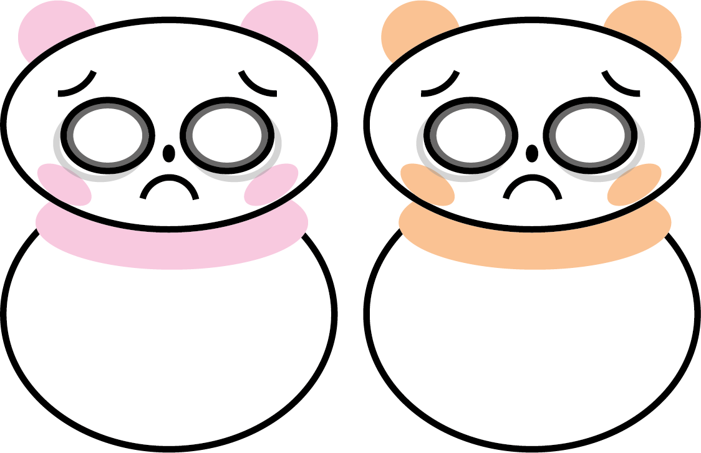

한국으로 가기 위해 나와 친구는 이스타 체크아웃 줄에 섰다. 벌써 일본에서의 3일이 지났다는 생각에 아쉬움만 가득했다. 나는 친구에게 면세점에서 로이스 초콜릿을 사는 거로 일본의 마지막 날을 즐겁게 마무리하자고 말했다. :)
. . .
우리의 체크아웃 순서가 되었다. 안타깝게도 항공사 직원은 한국어를 잘하는 일본인이 아니라서 우리에게 영어로 말을 하였다. 당연히 나와 친구는 잘 못 알아들었지만 웃으면서 하이라고 대답을 하였다. 그런데 갑자기 항공사 직원이 심각한 표정으로 뭔가가 잘못되었다는 듯이 말을 했다. 우리는 의아해하며 무슨 일인지 물어봤다. 항공사 직원이 내 여권을 가리키며 이름이 없다고 했다. ‘나 집 못 가?’라는 생각에 순간 머릿속이 새하얘졌다.
정신을 차리고 상황을 파악해보니 예매내역에 내 이름의 A가 없이 Lee Hyun, 리현으로 예매가 되어있었다. 친구가 미안하다고 하며 어쩔 줄 몰라 했다. 나는 친구에게 괜찮다고 하며 친구를 달래면서 직원과 이야기를 나누었다. 그녀는 나에게 영어로 다른 시간의 비행기를 예매하라고 했다. 우리는 울상으로 안된다는 신호를 강력하게 보냈다.
나는 직원에게 다른 방법은 없는지 물어봤다. 직원은 잠시 자리를 비우며 다른 직원에게 일본어로 물어보았고 나는 무교지만 간절하게 부처님, 하느님, 알라신 등 다양한 신에게 기도하였다.
1시간 같던 15분이 지나고 직원이 돌아왔다. 그녀는 나에게 계산기로 23000을 입력해 보여주었고 이것만 내면 이름을 바꿔준다고 말을 했다. 친구는 미안해하며 돈을 냈다. 직원은 나에게 영어로 마지막으로 이름 바꾸는 거 일본에서 처음이자 마지막이라는 경고를 하였다. 나는 순간적 으로 영어를 알아듣고 그분에게 감사함을 담아 아리가또 고자이마스라고 말을 했다. 지금 생각해보면 난 그때 직원의 등 뒤에 흰 날개를 본 것 같았다. 그 후 나는 다른 검사에서도 무슨 일이 또 생길까 봐 무서워 긴장상태로 일본의 마지막 날을 마무리하였다.